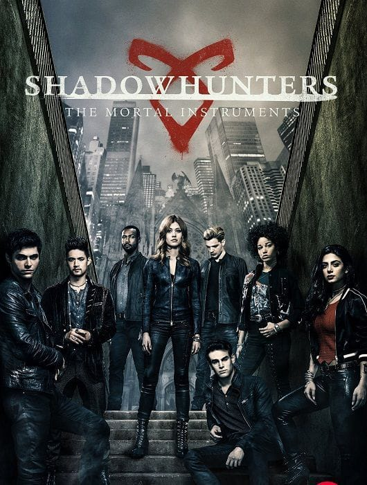
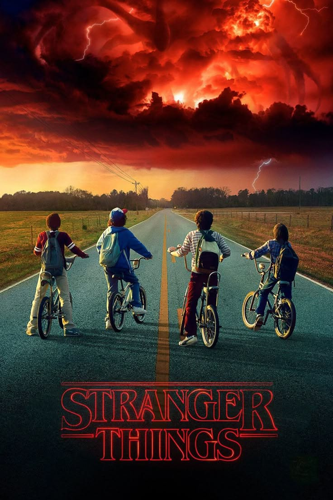
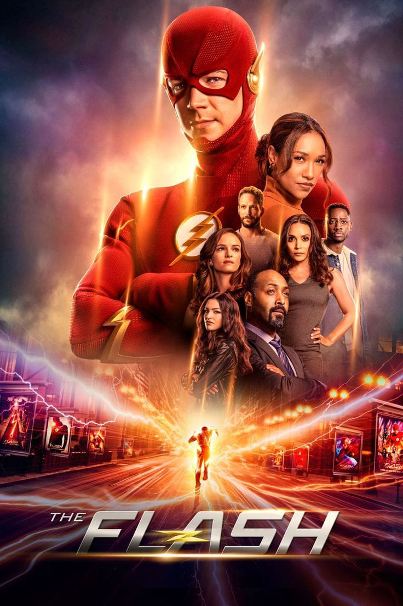
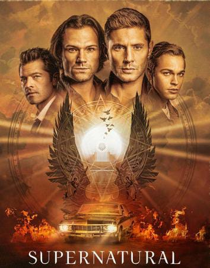
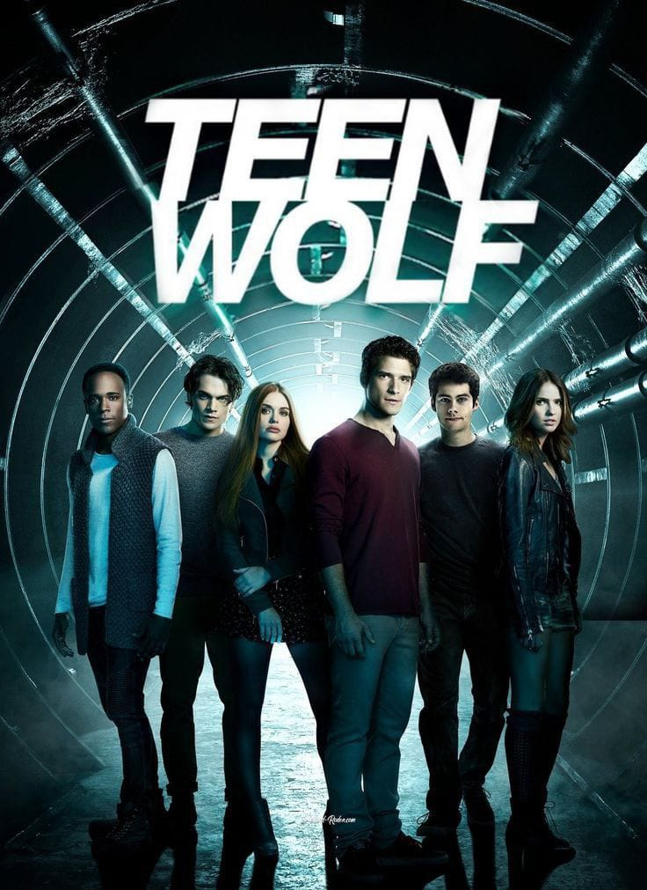

Shadowhunters
Baseada na saga Os Instrumentos Mortais, a série conta a história de Clary Fray, que descobre fazer parte de um grupo de caçadores de sombras responsáveis por proteger o mundo de demônios e outras criaturas sobrenaturais.

Baseada na saga Os Instrumentos Mortais, a série conta a história de Clary Fray, que descobre fazer parte de um grupo de caçadores de sombras responsáveis por proteger o mundo de demônios e outras criaturas sobrenaturais.

Uma série de romance, drama e fantasia que acompanha a vida de Elena Gilbert, uma jovem que se envolve com os irmãos vampiros Stefan e Damon Salvatore, enfrentando mistérios, criaturas sobrenaturais e grandes desafios.

Misturando ficção científica, suspense e aventura, a série acompanha um grupo de amigos que investiga o desaparecimento de um garoto e acaba descobrindo experimentos secretos, criaturas assustadoras e um mundo paralelo.

É uma série de ação e ficção científica sobre Barry Allen, um cientista que ganha o poder da supervelocidade após um acidente. Como o herói Flash, ele protege sua cidade de vilões e enfrenta grandes desafios ao lado de seus amigos.

Supernatural é uma série de fantasia, ação e suspense que acompanha os irmãos Sam e Dean Winchester, dois caçadores que viajam pelos Estados Unidos enfrentando demônios, fantasmas, monstros e outras criaturas sobrenaturais.

A série acompanha Scott McCall, um adolescente que, após ser mordido por um lobisomem, ganha habilidades sobrenaturais. Enquanto aprende a controlar seus poderes, ele enfrenta perigos e protege seus amigos.
Uma série de romance, drama e fantasia que acompanha a vida de Elena Gilbert, uma jovem que se envolve com os irmãos vampiros Stefan e Damon Salvatore, enfrentando mistérios, criaturas sobrenaturais e grandes desafios.
Saiba mais